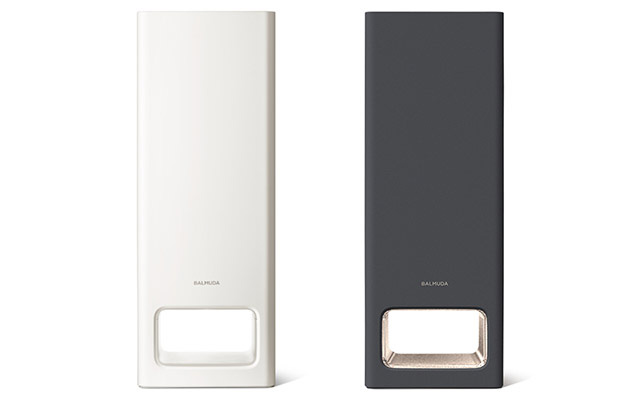
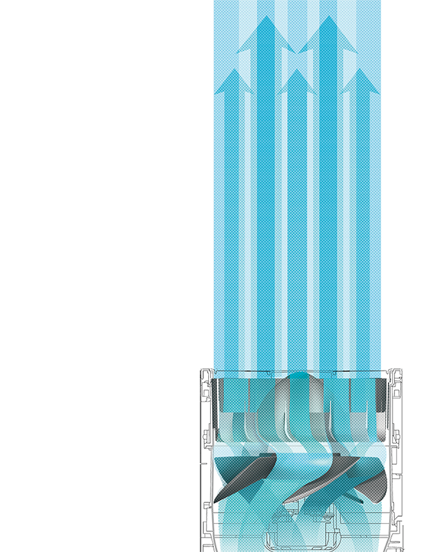
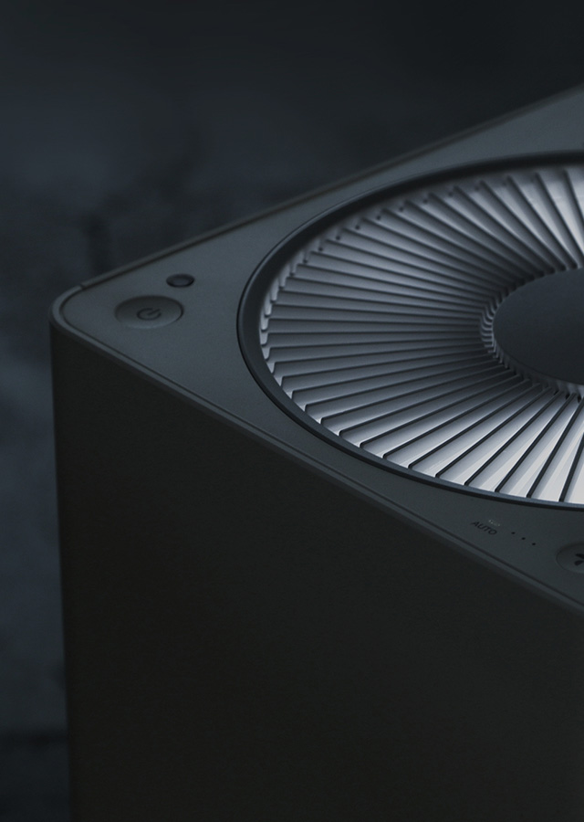
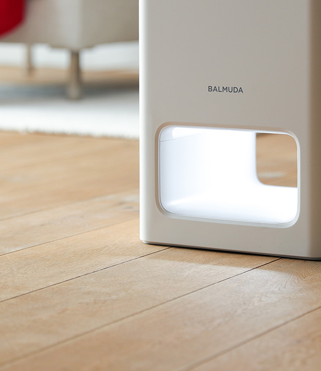
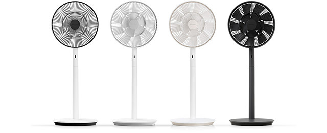
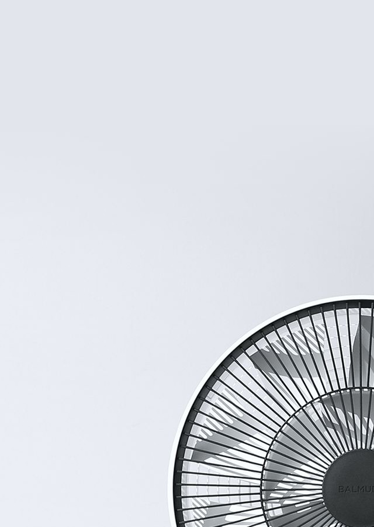
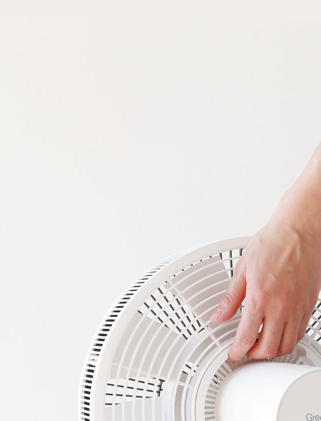

본문 영역
Air-
The Pure
-
GreenFan S
BALMUDA The Pure

발뮤다의 새로운 공기청정기
BALMUDA The Pure
BALMUDA The Pure
BALMUDA The Pure는 독자적인 팬구조로 대량의 공기를 천장까지 뿜어내어 순환기류를 형성합니다. 이 순환기류는 구석에 있는 공기까지 깨끗이 청정합니다.
흡입된 공기는 True HEPA 필터를 거쳐 0.3㎛의 미립자 99.97% 잡아낸 후*1, 활성탄과 제오라이트를 함유한 탈취필터로 불쾌한 냄새를 신속히 제거합니다.
BALMUDA The Pure는 깨끗한 공기로 기분 좋은 공간을 선사합니다.
-

- Technology
- BALMUDA The Toaster에는 가장 맛있는 맛을 실현하기 위해 토스트, 치즈토스트, 바게트, 크루아상, 클래식 모드로 구성된 5가지 모드가 있습니다. 자세히
-

- 공기를 깨끗하게 하는
빛의 기둥 - BALMUDA The Pure는 흡입구와 송풍구에 빛이 들어오고, 이 빛의 기둥을 통과하는 동안 공기가 깨끗하게 청정됩니다.
본체의 디자인은 아주 심플하게, 어떤 공간에 놓아도 조화롭게 어울릴 수 있도록 디자인되었습니다. 자세히
- 공기를 깨끗하게 하는
-

- 추천 사용법
- BALMUDA The Pure를 보다 효과적으로 사용하기 위한 추천 사용법을 소개합니다. 자세히
BALMUDA GreenFan S

자연의 바람을 재현한 선풍기
BALMUDA GreenFan S
BALMUDA GreenFan S
GreenFan S는 발뮤다의 독자적인 기술로 자연의 바람을 재현한 선풍기입니다.한여름 오후, 나무 그늘에서 불어오는 듯한 기분 좋은 바람을 실내에서도 그대로 느낄 수 있습니다. GreenFan S의 기분 좋은 바람과 함께 멋진 여름을 보내시기 바랍니다.
-

- 자연의 바람을 재현
- 발뮤다만의 독창적인 이중구조 날개는 공기를 자연의 바람처럼 넓게 퍼지게 하며 부드럽게 흐르도록 만듭니다. 일반 선풍기에 비해 약 4배 넓게 퍼져나가는 바람은 마치 자연 속에 있는 듯 기분 좋게 느껴집니다. 자세히
-

- 주방,거실,침실에서
- 별매품 Battery&Dock을 장착하면 전원 플로그 없이 자유롭게 이동할 수 있는 무선 선풍기가 됩니다. 편리한 이동, 저소음, 회전 각도 조절 등. GreenFan S에는 생활에서 바람을 편리하게 활용하기 위한 다양한 노력이 담겨있습니다. 자세히
-
- GreenFan S가
탄생하기 까지 - '다음 시대의 선풍기를 만들자!' 라는 일념으로 개발을 시작한 GreenFan S. GreenFan S가 지금의 모습이 되기까지는 뜻밖의 영감과 우연한 발견이 있었습니다. 자세히
- GreenFan S가